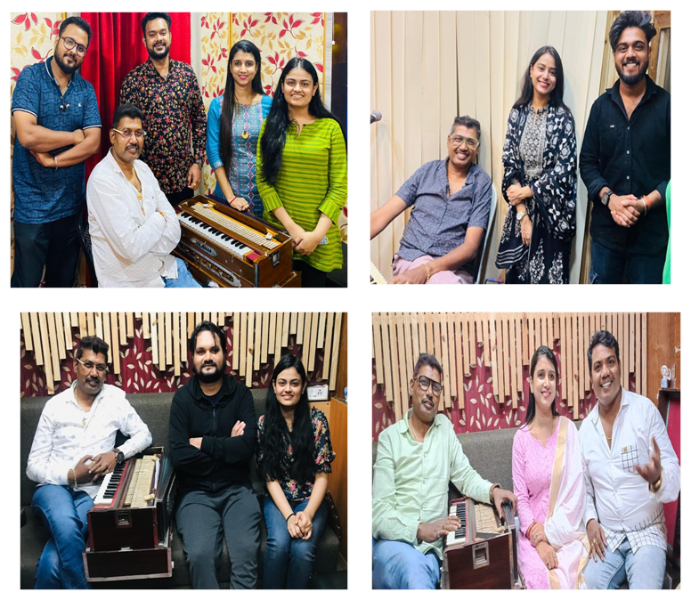
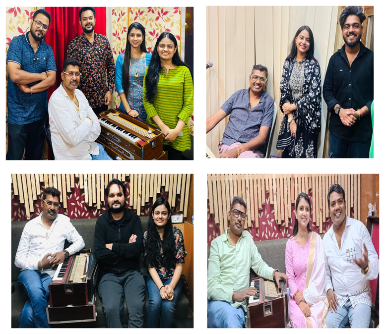

Prem Aanand's Artistic Collaborations
Bridging cinemas and creating timeless musical moments across industries
Bollywood Collaborations
Prem Aanand's profound musical artistry has resonated across the Indian film industry, leading to acclaimed collaborations with some of Bollywood's most distinguished names. His distinctive vision has consistently enriched Hindi cinema, weaving unforgettable melodies that captivate audiences and leave a lasting impression.
Ollywood Collaborations
Prem Aanand has collaborated with renowned artists from both Bollywood and Ollywood, creating memorable compositions that bridge regional and national cinema. His innovative approach to music composition has strengthened the bonds between film industries while maintaining the unique charm of Odia cultural expression.
 

82+
Film Scores
Across multiple regional and national films
2000+
Album Compositions
Original creative works with diverse artists
40+
Fresh Voices Mentored
Nurturing next generation of musicians
20+
TV Serials
Creating iconic theme music for television
The Art of Collaboration
Artistic Synergy
Blending diverse talents to create something extraordinary that resonates with audiences across cultures and generations.
Innovation Through Unity
Every collaboration brings fresh perspectives, pushing creative boundaries and exploring new dimensions in music composition.
Community Building
Strengthening bonds between artists, industries, and communities through the universal language of music.
Cultural Preservation
Honoring traditional music forms while embracing modern techniques to create timeless pieces for future generations.